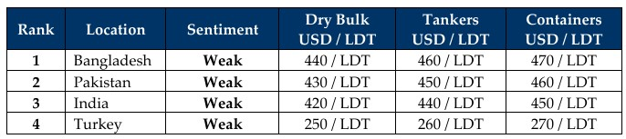

inWeekly Demolition Reports16/06/2025

GMS is pleased to announce a special three-part webinar series titled “HKC Compliance: What the Maritime Industry Needs to Know,” being hosted on June 25th & June 26th, 2025. This event marks the entry of the Hong Kong International Convention for the Safe and Environmentally Sound Recycling of Ships (HKC), which officially enters into force on June 26, 2025. Implemented by the International Maritime Organization (IMO) in 2009, the Hong Kong Convention (HKC) establishes binding global standards for the safe and environmentally sound recycling of ships. The Convention enters into force after 16 years, following ratification by nations representing over 40% of the world’s merchant fleets. It introduces legally binding requirements for shipowners, recycling facilities, and flag states worldwide. Participation as always, is free with advance registration. One registration gives you access to all three sessions. Register your spot via the following the link athttps://us06web.zoom.us/webinar/register/3217498297589/WN_kLd2bjyvRxuaO3ZnZ1o3jg
In other worldwide news, the unending volatility that the world is barely getting used to through 2025, skyrocketed this week not only did Israel strike Iranian nuclear sites, arms facilities, and oil depots across the country, but Trump also revived the tariff wars once again asking for all nations to present renewed offers and barter fresh trade negotiations that saw economic volatility return with a vengeance this week. To start with, as Israel struck several sites across Iran over 50 straight hours including major oil refineries, oil futures surged by over 7.2% in a matter of a couple of days that saw oil futures settle at USD 73 / barrel, as further waves of attacks near the Gulf of Hormuz spark fears of oil export disruptions. Freight rates meanwhile tailed along with an overall 3.4% jump reported by the Baltic Exchange Dry Index, with Capes and Panamax sectors reporting 4.7% and 1.9% jumps respectively, reaching their highest levels in 2 months. The resulting chaos saw the U.S. Dollar surging against all major ship recycling nations while local steel plate prices fell sharply in India, Bangladesh, and even China.
The Indian sub-continent recycling markets meanwhile have been on a downward spiral for most of this year and this week was no different, with offers retreating across the market rankings and owners firmly in the area of chasing market levels amidst an economic and global uncertainty that was expected to deliver an influx of recycling tonnage and is yet to be fully seen. Indeed, constant geopolitical drama seems to be depriving recycling markets of all types of tonnage amidst rising freight rates as dry bulk, tanker, and even container sectors remain artificially propped up on the back of a depressing cycle of wars, tariffs, tensions, and regional traumas. A growing shadow of dark fleets is also depriving ship recyclers from their customary supply of tonnage, as sanctions and constantly changing regulations bite, and then force lucrative trade routes out of those unwilling to risk it. Meanwhile, the imminent inception of the Hong Kong Convention into force in the next 10 days has seen strides made (in terms of upgrades to facilities) as Bangladesh looks to fall in line with the advancements India has made over the last several years, whilst Pakistan lags a healthy ways behind the competition. As we enter the traditionally quieter monsoon season in the sub-continent, a trickle of tonnage is expected to make its way to sub-continent shores for recycling – giving yards in both Bangladesh and especially Pakistan, time to continue and complete their upgrades before supply increases again. Turkey on the far end, remains quiet and missing from the bidding tables.
For Week 24 of 2025, GMS Market Rankings / vessel indications are as below.

📄 Download PDF: Ship-recycling-market-insight-Week-24-06-13-2025-GMS_Celebrates_HKC.pdfSource: GMS,Inc.https://www.gmsinc.net/gms_new/index.php/web